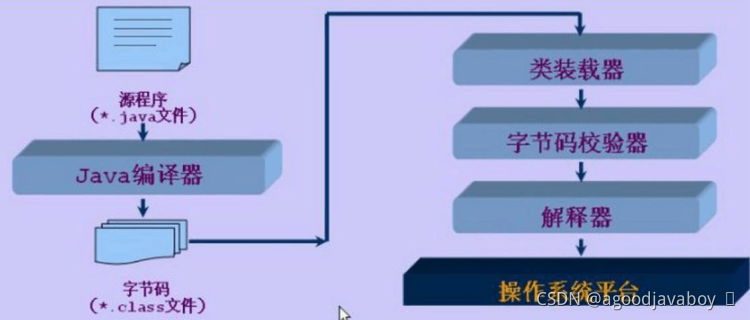

# 编程语言、软件与Java语言概述
# 编程语言概述
编程语言（programming language）可以简单的理解为一种计算机和人都能识别的语言。一种计算机语言让程序员能够准确地定义计算机所需要使用的数据，并精确地定义在不同情况下所应当采取的行动。
编程语言处在不断的发展和变化中，从最初的机器语言发展到如今的2500种以上的高级语言，每种语言都有其特定的用途和不同的发展轨迹。比如服务端开发常用到的Java，人工智能大数据方面常用到的python，展示端经常用到的脚本语言JavaScript。编程语言并不像人类自然语言发展变化一样的缓慢而又持久，其发展是相当快速的，这主要是计算机硬件、互联网和IT业的发展促进了编程语言的发展。
编程语言的发展可以简单的分成三步，分别在应用和编写上有所提升：
机器语言：这种语言主要是利用二进制编码进行指令的发送，能够被计算机快速地识别，其灵活性相对较高，且执行速度较为可观，机器语言与汇编语言之间的相似性较高，但由于具有局限性，所以在使用上存在一定的约束性。
汇编语言：该语言主要是以缩写英文作为标符进行编写的，运用汇编语言进行编写的一般都是较为简练的小程序，其在执行方面较为便利，但汇编语言在程序方面较为冗长，所以具有较高的出错率。
高级语言：所谓的高级语言，其实是由多种编程语言结合之后的总称，其可以对多条指令进行整合，将其变为单条指令完成输送，其在操作细节指令以及中间过程等方面都得到了适当的简化，所以，整个程序更为简便，具有较强的操作性，而这种编码方式的简化，使得计算机编程对于相关工作人员的专业水平要求不断放宽。
高级编程语言在被计算机执行时，需要将高级语言指令转换为计算机可运行的机器语言，那根据编译机制的不同，还会将编程语言分为两类：
编译型语言：高级编程语言将通过编译器软件（通常软件自带的编译软件）进行编译，生成计算机可执行的机器语言后运行机器语言输出指令，因为在编译后的运行中直接运行的机器语言，所以不会消耗额外的效率去执行编译操作，效率较高。但编译后生成的可执行文件通常因操作系统而不同，所以在不同的操作系统中要进行不同的编译，而不能将可执行文件在其他操作系统中执行。
解释型语言：高级编程语言的运行将逐行逐句的进行编译，并直接操作计算机，此类语言通常用于脚本等轻量运算或对效率要求不高的应用环境。因为在运行时要兼顾编译的耗时，所以效率比编译型语言低，但运行所依赖的运行环境会因操作系统的不同而安装不同的运行环境，这样就可以将源码直接迁移到其他操作系统后，采用特定的运行环境软件来运行，可以实现跨平台的效果。
因为编程语言会对计算机硬件的内存进行读写操作，那对内存进行空间管理和划分的区别还可以将其分为三类：
强类型语言：强类型是针对类型检查的严格程度而言的，它指任何变量在使用的时候必须要指定这个变量的类型，而且在程序的运行过程中这个变量只能存储这个类型的数据。因此，对于强类型语言，一个变量不经过强制转换，它永远是这个数据类型，不允许隐式的类型转换。强类型是自定义类所具有的优势，它使得对象处理的数据更容易被理解。因此，强类型语言在大规模信息系统开发中具有巨大优势，特别是当设计者定义了由自定义类所组成的数据访问层，并把设计向组织内的其他程序员发布的时候。它可以通过类型检查机制在编译过程中发现许多容易被人忽视的错误，从而保证软件的质量，使得大规模的软件集成为可能。
弱类型语言：弱类型的检查很弱，仅能严格的区分指令和数据，并不会强制变量数据类型在运行中的改变。弱类型语言允许变量类型的隐式转换，允许强制类型转换等，如字符串和数值可以自动转化。
无类型语言：无类型不检查，甚至不区分指令和数据。
# 软件概述
软件是一系列按照特定顺序组织的计算机数据和指令的集合。一般来讲软件被划分为系统软件、应用软件和介于这两者之间的中间件，也就是说常说的Windows系统或者安卓等操作系统都属于系统软件，常用的安装到系统软件上的应用称为应用软件。软件并不只是包括可以在计算机上运行的电脑程序，与这些电脑程序相关的文档一般也被认为是软件的一部分。简单的说软件就是程序加文档的集合体。
软件是通过编程语言来编写的指令代码来支撑运行的，并且应用软件会分为B/S架构（浏览器与服务器）和C/S（客户端与服务器）架构之分，B/S架构表示在浏览器上访问的网站其实也是软件的一种形态。
# Java概述
Java是一门面向对象编程语言，不仅吸收了C++语言的各种优点，还摒弃了C++里难以理解的多继承、指针等概念，因此Java语言具有功能强大和简单易用两个特征。Java语言作为静态面向对象编程语言的代表，极好地实现了面向对象理论，允许程序员以优雅的思维方式进行复杂的编程。
Java具有简单性、面向对象、分布式、健壮性、安全性、平台独立与可移植性、多线程、动态性等特点。Java可以编写桌面应用程序、Web应用程序、分布式系统和嵌入式系统应用程序等。
# Java的特点
简单性：Java看起来设计得很像C++，但是为了使语言小和容易熟悉，设计者们把C++语言中许多可用的特征去掉了，这些特征是一般程序员很少使用的。Java能够自动处理对象的引用和间接引用，实现自动的无用单元收集，使用户不必为存储管理问题烦恼，能更多的时间和精力花在研发上。
面向对象：Java是一个面向对象的语言。对程序员来说，这意味着要注意其中的数据和操纵数据的方法（method），而不是严格地用过程来思考。在一个面向对象的系统中，类（class）是数据和操作数据的方法的集合。数据和方法一起描述对象（object）的状态和行为，每一对象是其状态和行为的封装。类是按一定体系和层次安排的，使得子类可以从超类继承行为。在这个类层次体系中有一个根类，它是具有一般行为的类。Java还包括一个类的扩展集合，分别组成各种程序包（Package），用户可以在自己的程序中使用。
分布性：Java设计成支持在网络上应用，它是分布式语言。Java既支持各种层次的网络连接，又以Socket类支持可靠的流（stream）网络连接，所以用户可以产生分布式的客户机和服务器，这样网络就变成软件应用的分布运载工具。
编译和解释性：Java编译程序生成字节码（byte-code），而不是通常的机器码。Java字节码提供对体系结构中性的目标文件格式，代码设计成可有效地传送程序到多个平台。Java程序可以在任何实现了Java解释程序和运行系统（run-time system）的系统上运行。在一个解释性的环境中，程序开发的标准“链接”阶段大大消失了。如果说Java还有一个链接阶段，它只是把新类装进环境的过程，它是增量式的、轻量级的过程。因此，Java支持快速原型和容易试验，它将导致快速程序开发。这是一个与传统的、耗时的“编译、链接和测试”形成鲜明对比的精巧的开发过程。
稳健性：Java消除了某些编程错误，使得用它写可靠软件相当容易。Java是一个强类型语言，它允许扩展编译时检查潜在类型不匹配问题的功能。这些严格的要求保证编译程序能捕捉调用错误，这就导致更可靠的程序。可靠性方面最重要的增强之一是Java的存储模型：Java不支持指针，它消除重写存储和讹误数据的可能性。类似地，Java自动的“无用单元收集”预防存储漏泄和其它有关动态存储分配和解除分配的有害错误。Java解释程序也执行许多运行时的检查，诸如验证所有数组和串访问是否在界限之内。 异常处理是Java中使得程序更稳健的另一个特征：异常是某种类似于错误的异常条件出现的信号。使用try/catch/finally语句，程序员可以找到出错的处理代码，这就简化了出错处理和恢复的任务。
安全性：Java的存储分配模型是它防御恶意代码的主要方法之一：Java没有指针，所以程序员不能得到隐蔽起来的内幕和伪造指针去指向存储器。更重要的是，Java编译程序不处理存储安排决策，所以程序员不能通过查看声明去猜测类的实际存储安排。编译的Java代码中的存储引用在运行时由Java解释程序决定实际存储地址。Java运行系统使用字节码验证过程来保证装载到网络上的代码不违背任何Java语言限制，这个安全机制部分包括类如何从网上装载，例如装载的类是放在分开的名字空间而不是局部类，预防恶意的小应用程序用它自己的版本来代替标准Java类。
可移植性：Java使得语言声明不依赖于实现的方面。例如，Java显式说明每个基本数据类型的大小和它的运算行为（这些数据类型由Java语法描述）。Java环境本身对新的硬件平台和操作系统是可移植的。
高性能：Java是一种先编译后解释的语言，所以它不如全编译性语言快。但是有些情况下性能是很要紧的，为了支持这些情况，Java设计者制作了“及时”编译程序，它能在运行时把Java字节码翻译成特定CPU（中央处理器）的机器代码，也就是实现全编译了。Java字节码格式设计时考虑到这些“及时”编译程序的需要，所以生成机器代码的过程相当简单，它能产生相当好的代码。
多线程性：Java是多线程语言，它提供支持多线程的执行（也称为轻便过程），能处理不同任务，使具有线程的程序设计很容易。Java的lang包提供一个Thread类，它支持开始线程、运行线程、停止线程和检查线程状态的方法。
动态性：Java语言设计成适应于变化的环境，它是一个动态的语言。例如，Java中的类是根据需要载入的，甚至有些是通过网络获取的。
跨平台：Java是一种先编译后解释的语言，编译生成的字节码文件可以在任何平台采用不同的解释器运行，并得到同样的运行结果。
# 应用场景
- 安卓应用：许多的 Android应用都是Java程序员开发者开发。虽然 Android运用了不同的JVM以及不同的封装方式，但是代码还是用Java语言所编写。相当一部分的手机中都支持JAVA游戏，这就使很多非编程人员都认识了JAVA。
- 在金融业应用的服务器程序：Java在金融服务业的应用非常广泛，很多第三方交易系统、银行、金融机构都选择用Java开发，因为相对而言，Java较安全。大型跨国投资银行用Java来编写前台和后台的电子交易系统，结算和确认系统，数据处理项目以及其他项目。
- 网站：Java 在电子商务领域以及网站开发领域占据了一定的席位。开发人员可以运用许多不同的框架来创建web项目。即使是简单的 servlet，jsp和以struts为基础的网站在政府项目中也经常被用到。
- 嵌入式领域：Java在嵌入式领域发展空间很大。在这个平台上，只需130KB就能够使用Java技术（在智能卡或者传感器上）。
- 大数据技术：Hadoop以及其他大数据处理技术很多都是用Java，例如Apache的基于Java的HBase和Accumulo以及 ElasticSearchas。
- 高频交易的空间：Java平台提高了这个平台的特性和及时编译，他同时也能够像 C++ 一样传递数据。正是由于这个原因，Java成为的程序员编写交易平台的语言，因为虽然性能不比C++，但开发人员可以避开安全性，可移植性和可维护性等问题。
- 科学应用：Java在科学应用中是很好选择，包括自然语言处理。最主要的原因是因为Java比C++或者其他语言相对其安全性、便携性、可维护性以及其他高级语言的并发性更好。
# 不同的版本
标准版：Java SE（Java Standard Edition，Java 标准版）是Java技术的核心和基础，是Java ME和Java EE编程的基础。标准版的Java平台为用户提供一个程序开发环境，这个程序开发环境提供了开发与运行Java软件的编译器等开发工具、软件库及Java虚拟机。用于开发和部署桌面、服务器以及嵌入设备和实时环境中的Java应用程序。
企业版：Java EE是用来简化企业解决方案的开发、部署和管理相关的复杂问题的体系结构。J2EE技术的基础就是核心Java的标准版，Java EE不仅巩固了标准版中的许多优点，例如“编写一次、随处运行”的特性、方便存取数据库的JDBC API、CORBA技术以及能够在Internet应用中保护数据的安全模式等等，同时还提供了对 EJB（Enterprise JavaBeans）、Java Servlets API、JSP（Java Server Pages）以及XML技术的全面支持。其最终目的就是成为一个能够使企业开发者大幅缩短投放市场时间的体系结构。 Java EE体系结构提供中间层集成框架用来满足无需太多费用而又需要高可用性、高可靠性以及可扩展性的应用的需求。通过提供统一的开发平台，J2EE降低了开发多层应用的费用和复杂性，同时提供对现有应用程序集成强有力支持，完全支持EJB，有良好的向导支持打包和部署应用，添加目录支持，增强了安全机制，提高了性能。
Micro版：Java ME是Java微版的简称（Java Platform,Micro Edition），是一个技术和规范的集合，它为移动设备（包括消费类产品、嵌入式设备、高级移动设备等）提供了基于Java环境的开发与应用平台。Java ME分为两类配置，一类是面向小型移动设备的CLDC（Connected Limited Device Profile），一类是面向功能更强大的移动设备如智能手机和机顶盒，称为CDC（Connected Device Profile CDC）。
# 编译运行方式
Java是一种特殊的高级语言，其既具有编译型语言的特征，又具有解释型语言的特征：因为Java语言要经过先编译、后解释才能被执行。
Java编写的程序需要先编译，但此编译不会生成特定平台的机器语言文件，而是生成一种和平台无关的字节码文件，也就是*.class文件，这种字节码文件不是可执行文件，这种文件无法在任何系统直接运行，它必须使用特定平台的解释器来解释执行。根据不同平台的Java解释器，将字节码文件解释成特定平台的机器文件：Java语言中负责解释字节码文件的是Java虚拟机，即JVM（Java Virtual Machine）。不同平台，各自实现了其JVM，JVM向编译器提供相同的编程接口，所以可解释编译器生成的字节码文件，将其解释成特定平台的机器语言文件。
编译型语言运行效率高是因为其生产的机器语言可以直接被计算机运行和理解，但无法很好的实现跨平台，Java的编译所生成的字节码文件能够尽快的被各个平台的解释器运行，并且可以轻易的实现跨平台的效果。实际在平台运行和使用的是字节码文件，而字节码文件是通过Java源文件生成得到的。
